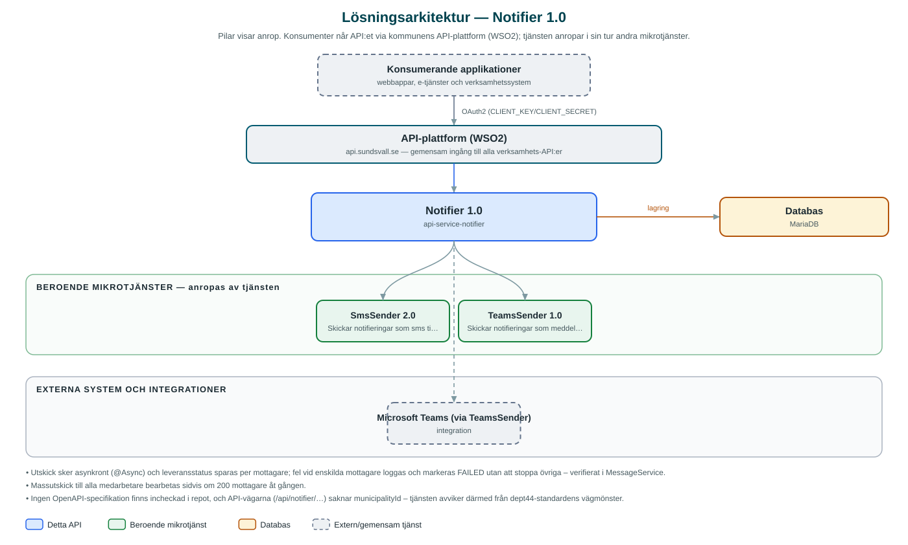

Notifier
Skickar notifieringar via sms och Microsoft Teams till kommunens medarbetare, per organisation eller manuellt skapade grupper.
Om API:et
Notifier används för att nå kommunens egna medarbetare med viktiga meddelanden, till exempel driftinformation. I stället för att avsändaren själv håller reda på telefonnummer och kontaktvägar väljer den mottagare ur tjänstens medarbetarregister – per organisationsenhet, via manuellt skapade grupper som kan blanda medarbetare från olika enheter, eller som utskick till samtliga medarbetare.
Meddelanden levereras som sms via kommunens SmsSender-tjänst eller som Teams-meddelanden via TeamsSender-tjänsten. Varje utskick sparas med leveransstatus per mottagare, så att avsändaren i efterhand kan se vilka som nåtts och var leveransen misslyckats.
API:et erbjuder även uppslag i medarbetar- och organisationsregistret: sök på namn, lista chefer, hämta organisationsträd med underliggande enheter samt hantera notifieringsgrupper.
Det här gör API:et
- Notifieringar via sms och Teams – Meddelanden skickas till valda medarbetare som sms via SmsSender eller som Teams-meddelanden via TeamsSender.
- Utskick till alla medarbetare – Massutskick till samtliga aktiva medarbetare, som bearbetas sidvis i bakgrunden.
- Notifieringsgrupper – Grupper kan skapas, uppdateras och tas bort manuellt och kan innehålla medarbetare från olika organisationsenheter.
- Leveransstatus per mottagare – Varje utskick sparas med status per mottagare, så att misslyckade leveranser kan följas upp.
- Medarbetar- och organisationsuppslag – Sökning på medarbetare, lista över chefer samt organisationsträd med underliggande enheter.
API-dokumentation
Ingen incheckad OpenAPI-specifikation hittades i källkodsförrådet; se källkoden för aktuell API-dokumentation.
Teknisk dokumentation
Nedan beskrivs hur tjänsten är uppbyggd, vilka andra tjänster den anropar och vad som krävs för att driftsätta den. Informationen är härledd ur källkoden och dess konfiguration på GitHub.
Arkitektur

API:et är en mikrotjänst (Java 25, Spring Boot via kommunens gemensamma tjänsteplattform dept44 (8.0.2), byggd med Maven). Konsumenter når tjänsten via kommunens gemensamma API-plattform (WSO2) på api.sundsvall.se – tjänsten anropas aldrig direkt. Tjänsten anropar i sin tur andra mikrotjänster i kommunens tjänstelandskap. Lagring: MariaDB med Flyway-migrationer; medarbetare, organisationsenheter, grupper samt meddelanden med leveransstatus per mottagare lagras här. Övriga integrationer som förekommer i koden: Microsoft Teams (via TeamsSender).
Teknikstack
- Språk: Java 25
- Ramverk: Spring Boot via kommunens gemensamma tjänsteplattform dept44 (8.0.2), byggd med Maven
- Databas: MariaDB med Flyway-migrationer; medarbetare, organisationsenheter, grupper samt meddelanden med leveransstatus per mottagare lagras här
- Övrigt: Googles libphonenumber för validering och normalisering av telefonnummer, asynkron utskickshantering med Springs @Async
Beroenden till andra mikrotjänster
Tjänsten anropar följande mikrotjänster. Versionerna är hämtade ur källkodens integrationsklienter.
| Tjänst | Version | Användning |
|---|---|---|
| SmsSender | 2.0 | Skickar notifieringar som sms till medarbetarnas telefonnummer. |
| TeamsSender | 1.0 | Skickar notifieringar som meddelanden i Microsoft Teams. |
Konfiguration och driftsättning
- application.yml med URL och OAuth2-klientuppgifter för SmsSender och TeamsSender
- MariaDB-anslutning via miljövariabler; databasschemat versionshanteras med Flyway
- Medarbetar- och organisationsregistret ligger i tjänstens egen databas och förutsätts fyllas på från kommunens personaldata
Noterbart ur källkoden
- Utskick sker asynkront (@Async) och leveransstatus sparas per mottagare; fel vid enskilda mottagare loggas och markeras FAILED utan att stoppa övriga – verifierat i MessageService.
- Massutskick till alla medarbetare bearbetas sidvis om 200 mottagare åt gången.
- Ingen OpenAPI-specifikation finns incheckad i repot, och API-vägarna (/api/notifier/…) saknar municipalityId – tjänsten avviker därmed från dept44-standardens vägmönster.
- En särskild endpoint (/employees/org-group/it-prod) returnerar medarbetare för tre hårdkodade organisations-id:n för IT-produktionsgruppen.
- Repot härrör från organisationen Public-Service-as-a-Service enligt README, men följer i övrigt kommunens dept44-uppsättning.
Källkod
Källkoden är öppen och finns hos Sundsvalls kommun på GitHub. I källkodsförrådet finns även instruktioner för att klona, konfigurera och starta tjänsten i egen miljö.